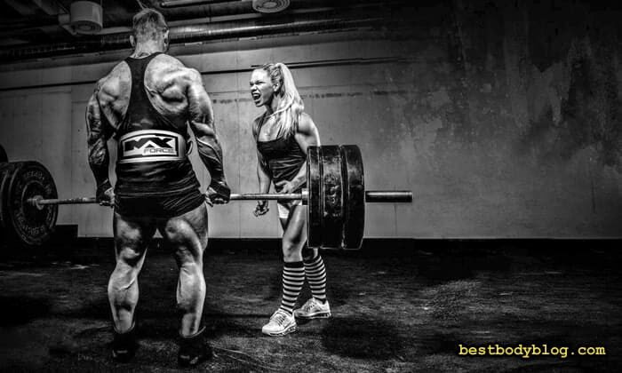

Програма тренувань в залі для чоловіків
Програма тренувань для чоловіків 3 рази на тиждень – це проста, зрозуміла і перевірена схема набору маси. У професіоналів свій погляд на періодичність тренінгу. Завдяки фармакологічній підтримці вони можуть тренуватися щодня і при цьому збільшувати м’язи у обсязі. Але для тих, хто обрав натуральний бодібілдинг, триденний спліт – це оптимальний варіант. Такий тижневий цикл дозволяє ефективно прокачувати як великі так і малі групи м’язів та дає їм достатньо часу для відновлення та росту. Правда, за однієї умови – якщо складений він з розумом. А ось як правильно скласти програму тренувань в залі для чоловіків на тиждень, я і хочу розповісти.
Зміст:
Головний недолік звичайних тренувальних програм
Аналіз популярних тренувальних програм для чоловіків змушує замислитись. Більшість з них – це комплекс вправ для однієї великої і однієї, зрідка двох, малих груп м’язів, наприклад, груди та трицепс. Не треба бути експертом, щоб зрозуміти – левова частка навантаження у цьому випадку ляже на грудні м’язи, а на долю трицепса залишаться крихти. Але поставити віз попереду коня і потренувати триголовий м’яз перед вправами на груди також не вихід. Адже прокачати грудні з втомленим трицепсом просто не вдасться. Як бути? Які м’язи качати разом, щоб вони зростали? Виходом стане тренувальна програма, про яку я хочу розповісти. Але спочатку – відповіді на важливі питання.
Чому триденний спліт?
Перед складанням триденного спліту на масу необхідно зрозуміти, які завдання ми перед собою ставимо. І взагалі, а чому саме триденний? Якщо стимулом для росту м’язів є тренування, чому не навантажувати їх частіше? Дійсно, для збільшення обсягу м’язів потрібно тренуватися, причому важко. Але м’язи зростають не у спортзалі, вони ростуть вночі, під час сну.
Примітка: для повного відновлення після зустрічі з залізом, їм потрібно (в залежності від того, яка навантажувалася група) від 24 до 36 годин. Від якості і тривалості відпочинку безпосередньо залежить швидкість росту м’язової маси.
Тобто, якщо потренуватися знову наступного дня, то процес відновлення м’язів, що працювали у попередній день, буде підірваним. Звичайно, існують винятки, але для більшості людей цикл: тренування на масу + день відпочинку, а то і два, підходить якнайкраще. Є і інші варіанти спліту, які передбачають більш часті походи до залу. Але якщо вести розмову про програму тренувань на тиждень для чоловіка, не обдарованого видатними генетичними даними, пропоную триденний спліт взяти за основу.
Чому це чоловіча програма для набору маси?
З кількістю тренувань на тиждень ми визначилися. Тепер потрібно визначитися з пріоритетами. У кожного вони свої, але більшість чоловіків, які прийшли до тренажерної зали хочуть досягти наступних цілей:
- Перша. Просто набрати м’язову масу. Масу тілу дають ноги, груди та спина. Це означає, що програма має бути націлена, насамперед, на їх розвиток.
- Друга. Накачати руки. Тобто, приділити увагу збільшенню біцепса і трицепса
- Третя. Стати ширшим. Отже, набір маси плечового поясу, особливо середньої дельти – це останній пріоритет чоловічої тренувальної програми.
Складання програми тренувань на тиждень, потрібно почати зі схеми прокачування великих м’язів. Це важливо тому, що швидкість набору маси безпосередньо залежить від рівня трьох головних анаболічних гормонів: тестостерону, соматотропіну (гормону росту) і ІФР-1 (інсуліноподібного фактору росту). Чим вищій і стабільніший їх рівень, тим швидше м’язи збільшуються у обсязі.
Найпотужніший фактор їх підвищення – стресове фізичне навантаження, тобто не аби яке, а найважче і найскладніше. Це своєрідний сигнал організму створити більше гормонів, відповідальних за обсяг і силу м’язів, щоб впоратися зі стресом. В цьому плані кращими є базові вправи зі штангою – присідання і станова тяга. Гормональний відгук від жиму штанги або гантель слабший, але теж істотний.